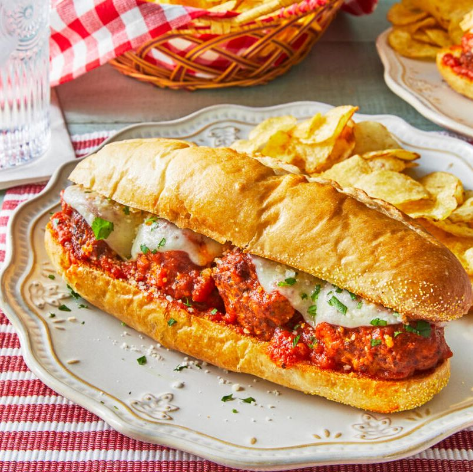

Meatball Sub

Description
Skip the cold cuts this year and wow your Super Bowl crowd with the ultimate meatball sub.
The meatballs - a classic beef and pork mix with parmesan cheese and garlic—would make any Italian grandmother
proud. (Just don't tell her that jarred marinara is standing in for homemade!)
Ingredients
For the Meatballs
- 1 c. breadcrumbs
- 1 c. freshly grated parmesan cheese
- 4 cloves garlic, minced
- 1/4 c. flat leaf parsley, finely chopped
- 1 1/2 tsp. kosher salt
- 1 tsp. ground black pepper
- 1/2 c. milk
- 2 large eggs
- 1 lb. ground beef (80/20)
- 1 lb. ground pork
- 1/4 c. olive oil
For the Subs
- 4 c. marinara sauce
- 6 hoagie rolls, about 8-inches long
- 1 tbsp. olive oil
- 24 meatballs
- 6 slices provolone cheese, halved
- 1/3 c. parmesan cheese
- 1/4 c. chopped parsley
Steps
- For the meatballs: Stir together the breadcrumbs, parmesan, garlic, parsley, salt, and pepper in a large
mixing bowl. Stir in milk and eggs until mixture is a loose, paste-like consistency.
- Add beef and pork. Using your hand like a claw in a twisting motion, gently mix the meat with the breadcrumb
mixture until well combined.
- Divide the meat mixture into 2 ounce portions and gently shape into balls about 2 inches wide. (If the
mixture is sticking to your hands, lightly grease your hands with olive oil to prevent sticking.)
- Heat a large Dutch oven over medium heat; add the olive oil. Working in batches of 6 to 8, brown the
meatballs on all sides, about 1 minute per side, turning each meatball about 4 times. Remove from the heat
and drain the grease from the pot.
- Return the Dutch oven to low heat and add the marinara sauce.
- Nestle the meatballs into the pasta sauce without stirring. Cover and cook 30 minutes.
- Gently stir the meatballs, making sure each one is coated in sauce. Cover and cook 15 minutes more, or until
the meatballs reach an internal temperature of 165°.
- For the sandwiches: Preheat oven to broil.
- Slices the hoagies rolls lengthwise, through the center of the rolls. Hollow out about 1 inch of the inside
of the bread, from the bottom pieces of the rolls.
- Brush the insides of the bread with the olive oil and place, cut-side up, on a rimmed baking sheet. Broil
until the bread is toasted, about 1 to 2 minutes. Remove the top halves of the hoagie rolls from the baking
sheet and set aside.
- Add 4 meatballs to each of the bottom halves of the rolls; top with 2 pieces of provolone cheese. Broil
until the cheese is melted and browned, 1 to 2 minutes.
- Add more sauce to each sandwich if desired. Sprinkle each sub with parmesan cheese and parsley. Top with the
remaining hoagie roll halves. Serve immediately.
Home